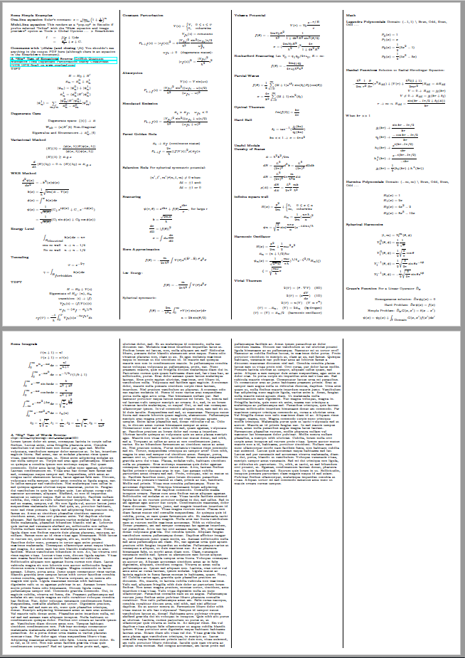
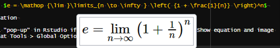
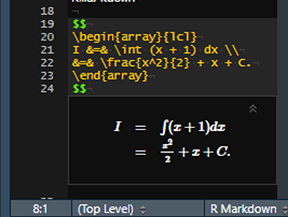

Making a Cheat Sheet
Unfortunately, I haven’t had as much time to make blog posts in the past year or so. I started taking classes as part of Georgia Tech’s Online Master of Science in Analytics (OMSA) program last summer (2018) while continuing to work full-time, so extra time to code and write hasn’t been abundant for me.
Anyways, I figured I would share one neat thing I learned as a consequence of taking classes—writing compact “cheat sheets” with {rmarkdown}. 1
Writing with {rmarkdown} is fairly straightforward—mostly thanks to an abundance of freely available learning resources, like the R Markdown: The Definitive Guide—and using CSS to customize your Rmarkdown output to your liking is not too difficult either. (By the way, huge shout-out to Yihui Xie and everyone else who has contributed to the development of the {rmarkdown} package.) My objective was to make an extremely compact PDF that minimizes all white space 2. Despite my knowledge of CSS, I had a hard time getting an output that I liked purely from CSS, so I looked online to see if I could find some good LaTex templates. (After all, I would be knitting the Rmarkdown document to PDF, and LaTex would be incorporated via the equations on the cheat sheet.) Some templates I found worked fine but weren’t completely to my liking. 3
In my search for an “ideal” template, I stumbled upon a small tidbit in the very last portion of the PDF chapter of the R Markdown book stating “You can also replace the underlying pandoc template using the template option”.
At first, I was a bit intimidated by the idea of writing my own template. (“I have to write my own template from scratch using a framework (LaTeX) that I’ve hardly even touched before now!”) But alas, the task became less intimidating when I realized that I could use the tried-and-true method of copying-pasting-modifying from Stack Overflow!
The Template
Using the template from this Stack Overflow post 4 as a basis, I ended up creating a relatively minimal template. For the curious reader, see this GitHub repo, for the latest version of my template. It also includes an example cheat sheet.

The “gist” of my template is shown below.
% Packages and preamble
% ...
\begin{document}
\begin{multicols*}{4}
$body$
\end{multicols*}
\end{document}The key for me was to understand how pandoc variables like $body$ are used as placeholders for user-supplied content. (I know I haven’t mentioned pandoc up to this point, but suffice it to say that it—along with the R package {knitr}—are what power the {rmarkdown} package.)
The multicols command shown in the snippet above is also noteworthy. This LaTex command provides the functionality for I wanted most for my cheat sheet—multiple columns of content! I should point out that there are in_header, before_body, and after_body YAML options for customizing PDF output with {rmarkdown}. 5
These options are probably sufficient for most people’s customization needs (so using a custom template would not be necessary). But for me personally, the appeal of having “complete” control of my output by using a template convinced me to forego these options. 6
Usage
So, exactly how do you use a custom template with {rmarkdown}? It’s as simple as specifying the path to your template file with the template option in the YAML header of your Rmarkdown document. 7
Why This Way?
Before I was using Rstudio and {rmarkdown} to write my cheat sheets, I tried out a couple of LaTex editors 8. First, I tried the very popular Overleaf. It is well known and commonly used because it is web-based, allows the user to collaborate in real-time, and provides real-time previewing 9. However, there was just something that felt “clunky” about the editor, and the ambiguity over package versions and usage was bothersome to me. 10 The other editor I tried for some time was TeXworks (with the pdftex distribution) Using the “Typset” command to generate my PDF output on an ad-hoc basis seemed to me to be a satisfactory workflow, but, among other things, I felt limited by the customization offered by TeXworks. 11
And so I turned to Rstudio and {rmarkdown} and didn’t look back. While learning how to create a custom template was a (minor) inconvenience, it has paid off in a number of ways:
I can use a familiar editor—Rstudio.
I can use a familiar workflow—writing in an Rmarkdown document and
knitting to create my desired output.Because I’m using
{rmarkdown}, I can use{rmarkdown}functionality that is not available when solely writing in LaTex.
This last point is huge. The whole world of markdown syntax is valid! For example, I can add emphasis to text with markdown’s ** and __ tokens (instead of LaTex’s more “verbose” syntax); I can use # to define section headers (which I just think is super “elegant”); and I can use HTML comments to comments out multiple lines of text. (Note that native LaTex only has a single-line comment token—%. 12) Additionally, beyond just the markdown functionality, I can include R code thanks to added layer of functionality offered by {rmarkdown}.
The one big thing that I feel like I “sacrificed” by moving to Rstudio and {rmarkdown} is the live preview feature that comes with Overleaf (and can be emulated with some configuration in other LaTex editors). Nonetheless, I feel like I get a reasonable facsimile of this feature with Rstudio’s functionality for inline previews of equations. 13 Below are examples of the preview capabilities for both single- and multi-line equations.


What Works for Me May Not Work For You
Although what I’ve described in this post has been working well for me—and I’d encourage others to try it out—I don’t claim it to be the “best” solution for all of your cheat sheet needs. 14 If you’ve got a workflow that works for you, that’s great! Keep using it! Be pragmatic.
Footnotes
For those unfamiliar with the concept of a cheat sheet, there’s no malice in it, despite what the moniker implies. From my experience, it is relatively common for teachers to let students use self-created note sheets (i.e. cheat sheets) for aid with taking exams.↩︎
in order to maximize the amount of space used for content, of course↩︎
One of the ones that I really liked was this one. However, it’s a bit more complex than I wanted. (This one implements a “structure” in which one “main” tex file references several others with the
\inputLatex command.)↩︎which was super helpful for a LaTex noob like me because it has comments explaining what specific lines/sections are doing↩︎
See the PDF chapter of the R Markdown book for some guidance with these.↩︎
I’m sure I could create a perfectly fine cheat sheet using just these options, or, even re-create the output that I have achieved with my template.↩︎
You can specify other options as well, such as
keep_latex: truefor an alternative LaTex engine withlatex_engine.↩︎The live preview feature is probably my favorite of all.↩︎
Others may view the hands-off approach to package management as an advantage of using Overleaf.↩︎
Perhaps this is the fault of my own. Perhaps all the customization that I would like exists and I just have not discovered how to enable it.↩︎
I realize that you can define custom commands or use a package to create multi-line comments in LaTex, but that ruins the point that I’m trying to make.↩︎
See the “Show equation and image previews” option in Tools > Global Options… > R Markdown.↩︎
I wouldn’t be surprised if I find a better workflow for myself in the future.↩︎